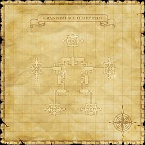
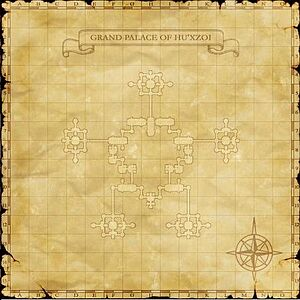

Before you begin
- Complete CoP 8-1: Garden of Antiquity.
Starting point
Particle Gate · Grand Palace of Hu'Xzoi
Walkthrough
- Pass through the right-hand Particle Gate from the palace entrance hall. Follow the escort route rather than a door or ??? offering a return to the lobby.
- At each Cermet Alcove, start its Quasilumin escort, clear threats ahead, and interact to pause or resume it. When it reaches its destination, speak to it again to open the final gate. A failed escort must be restarted at its alcove.
- Route: map 1 (J-8) escort → (L-7) transporter → map 2 (L-8) escort → (I-10) escort → (G-12) transporter → map 1 (G-10) escort → (G-4) transporter → map 2 (H-8).
- At the end, pass the first Cermet Portal and examine the next to spawn Ix'ghrah. Defeat it, adapting to its changing forms, then examine the portal again for completion.
Battle and progress notes
- The palace traversal is a long escort sequence. Carry a recovery method; returning to the lobby requires repeating the route. Optional map-NPC detours are separate from the mission.
Completion and reward
Progress to the next Chains of Promathia mission.
What this opens
Area maps
Open a zone below, then select a map to enlarge it. Match the named floors and grid coordinates in the steps; these are reference area maps, not a live position tracker.
Grand Palace of Hu'Xzoi


The Garden of Ru'Hmet


Zone guides
References
Steps are an original summary of the linked walkthrough and reviewed source. Other servers’ bonus rewards are not included. How to read requirements, waits and battlefield notes.
Additional level-75 reference
|




Walkthrough
- Head to Grand Palace of Hu'Xzoi and check the Particle Gate (H-8) on the right of where you zone in for a cutscene. Check it again to pass through and head into the mission.
Note: You cannot save progress on this mission. If you wipe without a way to reraise or otherwise have to quit, you have to start from the beginning. So make sure everyone has a few hours available before you start.
- You will need to follow the path to the end where you will encounter a NM fight. On your way there, you will run into Particle Gates that will not open. Find a nearby Cermet Alcove and check the Alcove to spawn a Quasilumin NPC. It will then progress on a pre-determined route. You can stop and start the Quasilumin much like the NPCs found in the escort quests.
- You have to protect the Quasilumin while it travels to its destination. Keep the Quasilumin alive and it will open Particle Gates along its way. It will eventually reach another Cermet Alcove and once there, check the NPC again and it will open the final gate.
- If the Quasilumin does not make it to the alcove, it will not open the last gate you need to progress, so travel back to the original spawn point and get a new one.
- You can open the Particle Gates from the other side if you need to backtrack.
- Continue to travel along, spawning new Quasilumins where needed. At times you will need to travel up and down through teleporters to change levels. There are forks in the road at points, but going the wrong way quickly leads to a dead end.
- Quasilumins which are not on the move are used to get the map of the Grand Palace. If you talk to all ten, talking to one again will give you a map of this area.
- One door (not an escort gate) will ask you if you want to pass through when you use it. Say no, as it leads back to the main room, forcing you to start over. Some ??? along the way will also offer you a choice to return to the main room if you check them. Refuse these as well.
- Complete route:
- Map detour: L1 J-12 map Quasilumin no.1.
- L1 J-8 escort (5 minute limit).
- L1 L-8 map Quasilumin no.2.
- L1 L-7 transporter.
- B1 L-8 escort (30 minute limit).
- Long map detour: B1 K-12 transporter, L1 J-12 map Quasilumin no.3, L1 K-12 transporter.
- B1 I-10 escort (30 minute limit).
- Pause at H-11 for map Quasilumin no.4.
- B1 F-12 map Quasilumin no.5.
- B1 G-12 transporter.
- Small map detour: L1 F-12 map Quasilumin no.6.
- L1 G-10 escort (40 minute limit).
- People who have already completed Promathia Mission 8-3 can join you at this point by taking the west door from the lobby.
- Long map detour: When you reach the large room at F/G-7/8, pause the escort Quasilumin.
- L1 D-8 transporter, B1 G-9 map Quasilumin no.7, B1 D-8 transporter.
- If you're very slow you may run out of time for the escort; if so, go back to G-10 and start it again.
- Don't miss the L1 H-7 map Quasilumin no.8 just before the final door.
- Small map detour: L1 H-4 map Quasilumin no.9.
- L1 G-4 transporter.
- B1 H-4 map Quasilumin no.10. That should be the last one, so talk to it again for your map.
- Continue on to B1 H-8 for the NM fight.
- After your long climb you will find a Cermet Portal that opens like a normal door and beyond that another Cermet Portal. Checking it spawns an NM called Ix'ghrah.
- Ix'ghrah's element varies; it may be based on the current day. It has about 8250 HP.
- Ix'ghrah will change between 4 forms at will and which 2-hour ability it uses depends on which form it is in at the time.
- The spider form is the most dangerous, having the overpowerful Sickle Slash move that ignores Utsusemi and hurts tanks badly. It uses Mighty Strikes.
- The bird form is hard to hit with weapons but takes lots of damage from magic. It uses Perfect Dodge.
- The ball form takes more damage from weapons and less from magic. It uses Manafont, and then spams either the -ga III spell for its element, or Sleepga II if it is dark elemental.
- The human form doesn’t take much damage AT ALL, but doesn’t do much either, and is a good time for mages to rest for a bit of MP. It uses Invincible.
- After you beat the Ix'ghrah, check the Cermet Portal for a cutscene to finish the mission.
Game Description
- Mission Orders
- Nag'molada has descended into the depths of the palace in search of the Chamber of Eventide. Join Prishe in her pursuit of the Kuluu diplomat.
References
Adapted from Eden Wiki: A Fate Decided · Contributors and history · CC BY-SA 4.0. Revision 22414. Layout, links and optional background text adapted for Zenith.